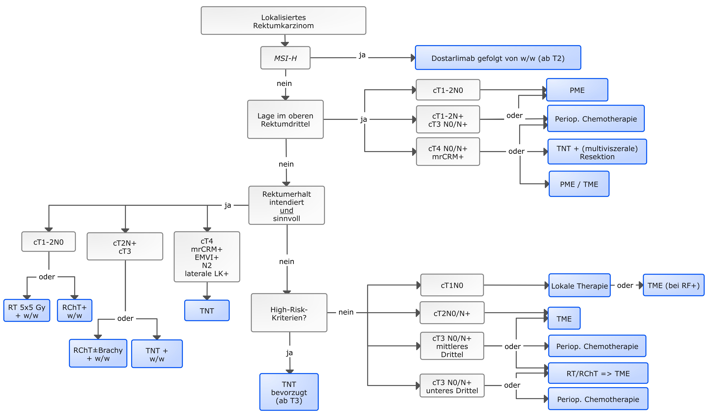

| CTCAE Grades | |||||
|---|---|---|---|---|---|
| CTCAE Term | Grade 1 | Grade 2 | Grade 3 | Grade 4 | Grade 5 |
| Gastrointestinal | |||||
| Diarrhea | Increase of <4 stools per day over baseline; mild increase in ostomy output compared to baseline | Increase of 4 - 6 stools per day over baseline; moderate increase in ostomy output compared to baseline; limiting instrumental ADL | Increase of >=7 stools per day over baseline; hospitalization indicated; severe increase in ostomy output compared to baseline; limiting self care ADL | Life-threatening consequences; urgent intervention indicated | Death |
| Lower gastrointestinal hemorrhage | Mild symptoms; intervention not indicated | Moderate symptoms; intervention indicated | Transfusion indicated; invasive intervention indicated; hospitalization | Life-threatening consequences; urgent intervention indicated | Death |
| Fecal incontinence | Occasional use of pads required | Daily use of pads required | Severe symptoms; elective operative intervention indicated | NA | NA |
| Gastrointestinal pain | Mild pain | Moderate pain; limiting instrumental ADL | Severe pain; limiting self care ADL | NA | NA |
| Proctitis | Rectal discomfort, intervention not indicated | Symptomatic (e.g., rectal discomfort, passing blood or mucus); medical intervention indicated; limiting instrumental ADL | Severe symptoms; fecal urgency or stool incontinence; limiting self care ADL | Life-threatening consequences; urgent intervention indicated | NA |
| Chemotherapy-related | |||||
| Nausea | Loss of appetite without alteration in eating habits | Oral intake decreased without significant weight loss, dehydration or malnutrition | Inadequate oral caloric or fluid intake; tube feeding, TPN, or hospitalization indicated | NA | NA |
| Vomiting | Intervention not indicated | Outpatient IV hydration; medical intervention indicated | Tube feeding, TPN, or hospitalization indicated | NA | NA |
| Anemia | Hemoglobin (Hgb) <LLN - 10.0 g/dL; <LLN - 6.2 mmol/L; <LLN - 100 g/L | Hgb <10.0 - 8.0 g/dL; <6.2 - 4.9 mmol/L; <100 - 80g/L | Hgb <8.0 g/dL; <4.9 mmol/L; <80 g/L; transfusion indicated | Life-threatening consequences; urgent intervention indicated | NA |
| Platelet count decreased | <LLN - 75,000/mm3; <LLN - 75.0 x 10e9 /L | <75,000 - 50,000/mm3; <75.0 - 50.0 x 10e9 /L | <50,000 - 25,000/mm3; <50.0 - 25.0 x 10e9 /L | <25,000/mm3; <25.0 x 10e9 /L | NA |
| White blood cell decreased | <LLN - 3000/mm3; <LLN - 3.0 x 10e9 /L | <3000 - 2000/mm3; <3.0 - 2.0 x 10e9 /L | <2000 - 1000/mm3; <2.0 - 1.0 x 10e9 /L | <1000/mm3; <1.0 x 10e9 /L | NA |
| Skin | |||||
| Dermatitis | Faint erythema or dry desquamation | Moderate to brisk erythema; patchy moist desquamation, mostly confined to skin folds and creases; moderate edema | Moist desquamation in areas other than skin folds and creases; bleeding induced by minor trauma or abrasion | Life-threatening consequences; skin necrosis or ulceration of full thickness dermis; spontaneous bleeding from involved site; skin graft indicated | Death |
| Urinary-Symptoms | |||||
| Dysuria | Present | NA | NA | NA | NA |
| Hematuria | Asymptomatic; clinical or diagnostic observations only; intervention not indicated | Symptomatic; urinary catheter or bladder irrigation indicated; limiting instrumental ADL | Gross hematuria; transfusion, IV medications, or hospitalization indicated; elective invasive intervention indicated; limiting self care ADL | Life-threatening consequences; urgent invasive intervention indicated | Death |
| Urinary frequency | Present | Limiting instrumental ADL; medical management indicated | NA | NA | NA |
| Urinary incontinence | Occasional (e.g., with coughing, sneezing, etc.), pads not indicated | Spontaneous; pads indicated; limiting instrumental ADL | Intervention indicated (e.g., clamp, collagen injections); operative intervention indicated; limiting self care ADL | NA | NA |
| Urinary tract pain | Mild pain | Moderate pain; limiting instrumental ADL | Severe pain; limiting self care ADL | NA | NA |
| Urinary urgency | Present | Limiting instrumental ADL; medical management indicated | NA | NA | NA |
| Others | |||||
| Erectile dysfunction | Decrease in erectile function (frequency or rigidity of erections) but intervention not indicated (e.g., medication or use of mechanical device, penile pump) | Decrease in erectile function (frequency/rigidity of erections), erectile intervention indicated, (e.g., medication or mechanical devices such as penile pump) | Decrease in erectile function (frequency/rigidity of erections) but erectile intervention not helpful (e.g., medication or mechanical devices such as penile pump); placement of a permanent penile prosthesis indicated (not previously present) | NA | NA |
| Fatigue | Fatigue relieved by rest | Fatigue not relieved by rest; limiting instrumental ADL | Fatigue not relieved by rest, limiting self care ADL | NA | NA |
Rektum
Rektalkarzinom ICD10: C20
Rektumkarzinome sind Tumoren, deren aboraler Rand bei der Messung mit dem starren Rektoskop 16 cm oder weniger von der Anokutanlinie entfernt sind (USA >12cm ab ano = Kolonkarzinome).1
Behandlung: Grundprinzipien und Entwicklung
Ohne Behandlung (oder rein palliative Behandlung) leben Patienten im Durchschnitt 9,8 Monate nach Diagnose.2 Im 1982 Heald führte der totalen mesorektalen Exzision (TME). Bei der TME wird das komplete Mesorektum entfernt, wodurch die Lokalrezidivrate auf ~3-7 % gesenkt werden konnte. Die OS nach 5 Jahren war 87 %.3 Die TME setzte sich in den folgenden zwei Jahrzehnten international durch und setzte einen neuen chirurgischen Standard.4
1985 zeigte die Gastrointestinal Tumor Study Group5 , dass die adjuvante Therapie Vorteile bei der lokalen Kontrolle (Rezidivrate/Disease-Free Survival) hatte, insbesondere die Radiochemotherapie.
Die Radiochemotherapy wurde dann als neoadjuvantes Konzept untersucht, um die Ergebnisse weiter zu verbessern.
Die theoretischen Vorteile waren4 :
- Frühere Behandlung von Mikrometastasen
- Besseres Ansprechen des Tumors: eine intakte Blutversorgung macht die Bestrahlung/Chemotherapy effektiver.
- Geringeres Risiko einer Tumorausbreitung während der Operation
- Geringere Toxizität - ein gesünderer Darm verträgt die Behandlung besser.
- Durch das downstaging erhöhte die Chancen auf Sphinkter-sparenden Operationen.
1997 zeigte der “Swedish Rectal Cancer Trial”6, dass die neoadjuvante RT sowohl die lokale Kontrolle als auch das Gesamtüberleben verbesserte, dies war ein Wendepunkt.
Die deutsche CAO/ARO/AIO-94 Studie7 bestätigte, dass die neoadjuvante CRT der adjuvanten CRT in lokal fortgeschrittenen Fällen überlegen war.
Trotz besserer lokaler Kontrolle blieb die Fernmetastasierung ein großes Problem. Die adjuvante Chemotherapie sollte dem entgegenwirken, doch die geringe Compliance begrenzte ihren Nutzen.8
Die Stockholm-III-Studie9 zeigte, dass eine Kurzzeit-Therapie mit verzögerter Operation ebenso wirksam war wie eine Kurzzeit-Strahlentherapie mit sofortiger Operation- was die Möglichkeit einer zusätzlichen Chemotherapie vor der Operation eröffnete.
Daraus entwickelte sich das Konzept der totalen neoadjuvanten Therapie (TNT)10,11, bei der alle Behandlungen (Radiochemotherapy und Chemotherapy) vor der Operation durchgeführt werden.
Die TNT verbessert die Ansprechraten, und bei einigen Patienten, die ein klinisch/pathologisch komplettes Ansprechen (cCR) erreichen, kann sogar eine Operation vermieden werden dies zegite z.B. die OPRA-Trial12, wodurch sich das Interesse an einer nichtoperativen Behandlung in ausgewählten Fällen verschiebt.
Patienten mit bestimmten genetisch bedingten Tumorarten (MSI-H/dMMR) erhalten inzwischen zunächst eine Immuntherapie, die häufig zu einer vollständigen Remission führt.13
Spreechstunde
Dokumentation des Leistungsstatus
Die Dokumentation des Leistungsstatus erfolgt nach der Einteilung der Eastern Cooperative Oncology Group (ECOG)
Obligatorische Untersuchungen
Zum Zeitpunkt der Erstdiagnose eines Rektumkarzinoms liegen bei 18% der Patienten Fernmetastasen vor.
- Leber 15%
- Lungen 4%
Dementsprechend sind folgende Untersuchungen laut S3-Leitlinie1 notwendig:
Rö-Thorax (2 Ebenen)
- Im Falle eines unklaren Befundes oder des Verdachtes auf Fernmetastasen oder Infiltration von Nachbarorganen oder umgebende Strukturen soll ein Mehrzeilen-CT des Abdomens und Beckens erfolgen bzw:
Bei Verdacht auf Lungenmetastasen ein CT des Thorax
CEA
Histologie/ MSI (Mikrosatelliteninstabilität)
DPD Test
DPD Test
Bei Vorliegen eines DPD-Mangels kann das Medikament 5-FU bzw. Capecitabin (Prodrug) nicht verstoffwechselt werden und es kommt zu schweren Toxizitäten. 30 % dieser gefährlichen Reaktionen sind durch einen DPD-Mangel erklärbar. Dementsprechend muss beim Erstgespräch der DPD-Test vorliegen, bzw. wird abgenommen.
Hierbei handelt sich um eine genetische Untersuchung im Sinne des Gendiagnostik-/Gentechnikgesetzes, d. h., es sind bestimmte Vorgaben einzuhalten (Aufklärung, Einwilligung, Durchführung durch einen Arzt und Mitteilung der Ergebnisse).
DPYD-Varianten sind als pharmakogenetische Eigenschaften mit hoher Bedeutung einzuordnen.
Wird eine klinisch relevante DPD-Variante gefunden, ist dem Patienten gemäß §10 Abs.1 Satz2 GenDG eine genetische Beratung anzubieten. Der Patient kann auf eine genetische Beratung nach dem Vorliegen der Testergebnisse verzichten, der Verzicht ist schriftlich zu dokumentieren. Wenn eine genetische Beratung nach dem Vorliegen des Testergebnisses gewünscht wird, darf die Beratung nur durch einen Facharzt für Humangenetik oder einen nach dem GenDG qualifizierten Arzt vorgenommen werden.14,15
Starre Rektoskopie
Beim Rektumkarzinom sollte die starre Rektoskopie mit Höhenangabe des Tumorunterrandes obligater Bestandteil der präoperativen Diagnostik sein.1
MRT
Die Befundbeschreibung soll eine Aussage über den Abstand zur mesorektalen Faszie beinhalten.1
Endosonographie
Im Falle eines mutmaßlichen T1-Karzinoms eine Endosonographie, hier ist die CT nicht geeignet. Bei der Differenzierung von T2 und T3-Karzinomen wies die Endosonographie wiederum eine höhere Sensitivität im Vergleich zu MRT und CT auf bei vergleichbarer Spezifität. In der Endosonographie lässt sich die mesorektale Faszie nicht darstellen.1
CEA
Bei etwa 30% aller kolorektaler Karzinome ist der Tumormarker CEA zum Zeitpunkt der Erstdiagnose erhöht.
Insbesondere in der Tumornachsorge ist dieser Tumormarker ein zuverlässiger Hinweis auf ein Rezidiv. Als weitere Tumormarker werden CA 19-9 und CA 125 diskutiert, wobei letzterer ein Marker der Peritonealkarzinose ist.
Laut S3-Leitlinie erhöht der CA 19-9 Wert die Aussagefähigkeit bezüglich des Vorliegens eines Rezidivs im Vergleich zu einer alleinigen CEA-Wert-Bestimmung nicht.1
PET-CT
Hat keinen Stellenwert in der Ausbreitungsdiagnostik bei Erstdiagnose eines kolorektalen Karzinoms.1
Histologie
MMR/MSI-Status
Bei etwa 3-5% der Patienten mit lokal begrenztem Rektumkarzinom ist ein DNS- Mismatch-Reparaturdefekt (dMMR) bzw. eine Mikrosatelliten-Instabilität (MSI-H) in der Tumorbiopsie nachweisbar.
Dostarlimab kann eine klinische komplette Remission erreichen. So dass eine Radiochemotherapie und eine Operation unterbleiben kann. Eine Handreichung der DGHO kann bei der Beantragung dieser Therapie hilfreich sein.
Entfernung vom Analrand
Die präoperative Messung der Höhenangabe des Tumors mit dem flexiblen Endoskop ist unzuverlässig. Zuverlässiger sind die Höhenangaben mit dem starren Rektoskop.1 Dementsprechend werden letztere dokumetiert. Ab Anokutanlinie:
- oberes Rektumdrittels (12 - 16 cm)
- mittleres Rektumdrittels (6 - <12 cm)
- unteres Rektumdrittels (< 6 cm) unterteilt
Rechtfertigende Indikation
Die Entscheidung für eine Strahlentherapie in unserer Praxis basiert auf einer Empfehlung des Tumorboards.
Dabei muss klar zwischen einem TNT-Konzept und einer neoadjuvanten Radiochemotherapie mit anschließender Operation unterschieden werden.
Ist diese Unterscheidung in der Empfehlung des Tumorboards nicht eindeutig dokumentiert, muss vor Therapiebeginn Rücksprache mit der Onkologie gehalten werden.
Stadium I (cT1-2N0)
Neoadjuvante vs. Upfront-Chirurgie
Bei T1-High-Risk-Karzinomen (G3/4 u./o. Lymphgefäßinvasion) und bei T2 Karzinomen liegt das Auftreten von Lymphknotenmetastasen bei 10–20%, sodass die alleinige lokale Exzision nicht empfohlen werden kann und eine primäre radikale Operation oder eine sekundäre radikale Nachoperation indiziert sind.
Lehnt der Patient in dieser Situation eine radikale Nachoperation ab, so kann eine adjuvante Radiochemotherapie erwogen werden.
Dahingengend haben Rektumkarzinome im UICC-Stadium I (T1/2, N0) nach alleiniger radikaler Operation mit adäquater totaler mesorektaler Exzision (TME) für Tumoren im unteren/mittleren Drittel sowie partieller mesorektaler Exzision (PME) für Tumoren im oberen Rektumdrittel niedrige Lokalrezidiv- und Fernmetastasenraten (3 % Lokalrezidive bzw. weniger als 10 % Fernmetastasen nach 10 Jahren.
Dementsprechend soll bei Tumore in UICC-Stadium I (cT1-2, N0) eine präoperative Therapie nicht durchgeführt werden.1
Tiefsitzenden T1, N0 high-risk Tumore
Für Patienten mit tiefsitzenden T1, N0 high-risk (G3/4, L1, V1, Durchmesser größer 3 cm, sm3) oder T2N0-Tumoren, die eine Exstirpation ablehnen, ist die Radio(chemo-) therapie, gefolgt von lokaler Exzision/transanaler endoskopischer Mikrochirurgie oder einer wait-and-see Strategie bei klinisch kompletter Remission eine Behandlungsoption1
Laut NCCN Leitlinie16 können bei hochrisiko cT1–2, N0 Tumore eine Radiochemotherapie mit Capecitabin oder 5-Fluorouracil (5-FU), oder eine Kurzzeit-RT gefolgt von FOLFOX or CAPEOX erfolgen.
Zu den Hochrisikomerkmalen gehören positive Ränder, lymphatische Invasion, schlecht differenzierte Tumore oder sm3-Invasion (submuköse Invasion bis zum unteren Drittel der Submukosa).
Tumoren des unteren und mittleren Rektumdrittels
Stadium II/III (cT3/4 und/oder cN+)
Eine neoadjuvante Radiochemotherapie oder KurzzeitRadiotherapie soll erfolgen.1
Ausnahmen1 :
cT1/2 Tumore im unteren und mittleren Drittel mit bildgebend fraglichen Lymphknotenbefall.
cT3a/b Tumore im mittleren Drittel mit in der MRT nur limitierter Infiltration ins perirektale Fettgewebe (cT3a: <1 mm, cT3b: 1-5 mm) und ohne bildgebenden Verdacht auf Lymphknotenmetastasen oder extra-muraler Gefäßinvasion (EMVI-) bei adäquater Qualitätssicherung der MRT-Diagnostik und der TME-Chirurgie.
Tumore im oberen Rektumdrittel
Rektumkarzinome im oberen Drittel ohne Risikokonstellation für ein Lokal-rezidiv sollen primär operiert. Jedoch eine präoperative Radio-/ Radiochemotherapie kann, Bei einer Risikokonstellation, erfolgen1 z.B.:
- T4
- mrCRM+
- bildgebend eindeutiger und ausgedehnter Lymphknotenbefall
Therapie-Algorithmus für die Stadien I-III der Onkopedia Leitlinie:17

Strahlentherapie: Dosiskonzept
Die neoadjuvante Radiotherapie kann entweder als:
- Kurzzeitbestrahlung mit 5 × 5 Gy, gefolgt von einer sofortigen Operation, oder
- Konventionell fraktionierte Radiochemotherapie (1,8–2,0 Gy bis zu einer Gesamtdosis von 45–50,4 Gy) mit einem Intervall von 6–8 Wochen bis zur Operation
durchgeführt werden.
Quelle:1
Standard: Konventionelle Radiochemotherapie (45–50,4 Gy)
Der Standard in unserer Praxis ist die normofraktionierte Bestrahlung im Rahmen einer Radiochemotherapie.
Diese soll laut S3-Leitlinie in folgenden Fällen durchgeführt werden1:
- T4-Tumoren
- Tumornähe zur mesorektalen Faszie (<1–2 mm)
- Tiefliegende Tumoren mit intendiertem Sphinktererhalt
Außerhalb eines TNT-Konzeptes
Die Bestrahlung erfolgt in 25 Fraktionen mit zwei Zielvolumina:
- Rektum: 2,0 Gy Einzeldosis
- Pelvines LAG: 1,8 Gy Einzeldosis
Im Rahmen eines TNT-Konzeptes
Die Therapie wird in 30 Fraktionen in zwei Abschnitte unterteilt:
Teil 1: Primärbehandlung (25 Fraktionen)
Zwei Volumina werden behandelt:
- Rektum: 1,8 Gy Einzeldosis
- Pelvines LAG: 1,8 Gy Einzeldosis
Teil 2: Boost (5 Fraktionen)
Ein Volumen wird behandelt:
- Rektum: 1,8 Gy Einzeldosis
Alternative: Kurzzeit-Radiotherapie
Die Kurzzeitbestrahlung ist geeignet für Patienten, die eine Radiochemotherapie vermutlich nicht tolerieren – z. B. aufgrund von Alter oder Komorbiditäten.
Diese erfolgt analog zur RAPIDO10 in 5 Fraktionen à 5 Gy
Für Patienten, bei denen ein Downsizing angestrebt wird, kann auch die Kurzzeitbestrahlung mit einem längeren Intervall bis zu 12 Wochen bis zur Operation durchgeführt werden – mit oder ohne zusätzlicher neoadjuvanter Chemotherapie.
Gerätearzt
Wöchentliche Kontrollbesuche
Zusammenfassung am Ende der Behandlung
Nebenwirkungen nach
Bei gleichzeitige systemische Therapie
Folgendes muss dokumentiert werden:
- Capecitabin-Dosierung
- Bzw. Protokolle für die kontinuierliche 5-FU-Infusion
- Die Laborüberwachung
Nachsorge
Leider wird den Leitlinien nicht immer gefolgt. So zeigte sich, dass bei Menschen jenseits des 65.Lebensjahres nur in 73,6% der Fälle die empfohlenen Koloskopien und lediglich bei 46,7% eine Bestimmung des CEA erfolgte, während nicht empfohlene Maßnahmen wie CT und PET-CT bei 48% bzw. 7% durchgeführt wurden.1
Bewertung des Ansprechens auf die Behandlung
Durch die neoadjuvante Radiochemotherapie und entsprechende Remission kann u. U. trotz primär nicht für möglich gehaltenen Sphinktererhaltes eine Schließmuskel erhaltende Rektumresektion möglich werden. Deshalb sollte diesbezüglich frühestens 6 Wochen nach Abschluss der Radiochemotherapie eine Reevaluation stattfinden.1
CEA Bestimmung in der Nachsorge
Die Bestimmung des karzinoembryonalen Antigens (CEA) wird alle 6 Monate für mindestens 2 Jahre empfohlen. Ein erhöhter CEA-Wert erfordert eine weitere Diagnostik.1
Wichtige Studien
| Clinical Trials in Rectal Cancer Treatment | |||||||||
|---|---|---|---|---|---|---|---|---|---|
| Grouped by Treatment Category | |||||||||
| Study | Year | Tumor characteristics | Tumor location | Age | Experimental Arms | standard of care | Radiation Type | Primary Outcome | Key Findings |
| Immunotherapy for dMMR | |||||||||
Cercek et al. |
2022 | dMMR stage II/III rectal cancer | NA | NA | Dostarlimab 9× every 3 wks for 6 mo, if no cCR → CRT 50,4Gy/28f | NA | None | cCR | 100% (12/12) had cCR, no grade ≥3 adverse events |
| Neoadjuvant vs Adjuvant CRT | |||||||||
CAO/ARO/AIO-94 |
2004 | T3–T4 or N+ | ≤ 16 cm from anal verge | 18–75 | CRT 50,4 Gy/28f → TME → 4× FU 500 mg/m2 | TME → CRT 50,4 Gy/28f + 5,4 Gy Boost to Tumor bed → 4× FU 500 mg/m2 | Long-course | OS | Pre-op CRT ↓ local recurrence (7% vs 11%), ↓ toxicity, ↑ sphincter-preserving (39% vs. 19%) |
NSABP R-03 |
2004 | T3–T4 or N+ | ≤ 15 cm from anal verge | NA | 6× FU 500 mg/m2 + LV 500 mg/m2 → CRT 45Gy/25f + 5,4 Gy Boost to Tumor bed → TME → 6× FU 500 mg/m2 + LV 500 mg/m2 | TME → 6× FU 500 mg/m2 + LV 500 mg/m2 → CRT 45Gy/25f + 5,4 Gy Boost to Tumor bed → 6× FU 500 mg/m2 + LV 500 mg/m2 | Long-course | DFS, OS | ↑ DFS and ↑ pCR with pre-op CRT, possible ↑OS, ↑ Recurrence free survival |
| Short vs Long Course Radiation | |||||||||
Dutch TME |
2001 | Resectable T1–T3 | ≤ 15 cm from anal verge | 26-88, 23-92 | SCRT → TME | TME alone | Short-course | Local recurrence | ↓ recurrence 2,4% vs 8,2% |
Polish Trial |
2006 | cT3/T4 | mid | NA | SCRT → 7d → TME ± 4 mo of bolus 5-fluorouracil and leucovorin | CRT 50,4 Gy/28f → 4-6 wks → TME ± 4 mo of bolus 5-fluorouracil and leucovorin | Short vs Long-course | sphincter preservation | sphincter preservation =, CRT ↑ pCR (16% vs 1%), better downstaging, no OS difference |
TROG 01.04 |
2012 | T3, N0–1 | mid-low | 26-82 | SCRT → 3-7d → TME → 6× 5FU 425 mg/m2,folinic acid 20 mg/m2 | CRT 50,4Gy → 4-6 wks → TME → 4× 5FU 425 mg/m2,folinic acid 20 mg/m2 | Short vs Long-course | 3-year Local recurrence | OS=, Local recurrence 7,5% vs 4,4% not significant |
STELLAR |
2022 | cT3/T4 and/or N+ | mid-low | 18-70 | SCRT→ 4× CAPOX → 4-6 wks → TME → 2× CAPOX | CRT 50,4Gy/28f → 6-8 wks → TME → 6× CAPOX | Short vs Long-course | DFS | DSF =; ↓ toxicity |
| Total Neoadjuvant Therapy | |||||||||
RAPIDO |
2020 | T4a/b, N2, EMVI+, CRM+ | < 16 cm from anal verge | 31–83 | SCRT → 6× CAPOX / 9× FOLFOX4 → 2-4 wk → TME | CRT 50,4Gy/28f or 50Gy/25f, → 6-8 wks → TME ± 8× CAPOX/12× FOLFOX4 | Short/Long-course | 3-year disease-related treatment failure | ↓ Disease-related treatment failure (24% vs 30%), ↓ distant mets, ↑ pCR (28% vs 14%) |
PRODIGE-23 |
2021 | cT3 or cT4 M0 | < 16 cm from anal verge | 18–75 | FOLFIRINOX ×6 → CRT 50Gy/25f → TME → 6× FOLFOX6 or 4× capecitabine ×4 | CRT 50Gy/25f → TME → 12× FOLFOX6 or 8× capecitabine | Long-course | DFS | ↑ DFS, ↑ pCR (28% vs 12%), ↓ distant mets |
OPRA |
2022 | Stage II–III | mid–low | IQR 51-68 | 8× FOLFOX or 5× CAPEOX → CRT 1,8 to 50-56 Gy | CRT 1,8 to 50-56 Gy → 8× FOLFOX or 5× CAPEOX | Long-course | DSF, Organ preservation | CRT-first→ better organ preservation (53% vs 41%), DFS = |
| cCR = clinical complete response, CRT = chemoradiotherapy, TME = Total mesorectal excision, LV = Leucovorin, OS = Overall survival, DSF = disease-free survival, pCR = pathological complete response, SCRT = Short-course radiation therapy (25 Gy/5f). | |||||||||
Literatur
1.
Deutsche Krebsgesellschaft, Deutsche Krebshilfe, AWMF. Leitlinienprogramm Onkologie: S3-Leitlinie Kolorektales Karzinom, AWMF Registrierungsnummer: 021/007OL. Published online 2019.
2.
Pestana C, Reitemeier RJ, Moertel CG, Judd ES, Dockerty MB. The natural history of carcinoma of the colon and rectum. The American Journal of Surgery. 1964;108(6):826-829.
3.
Heald RJ, Ryall RD. Recurrence and survival after total mesorectal excision for rectal cancer. Lancet. 1986;1(8496):1479-1482.
4.
Deschner BW, VanderWalde NA, Grothey A, Shibata D. Evolution and Current Status of the Multidisciplinary Management of Locally Advanced Rectal Cancer. JCO Oncol Pract. 2021;17(7):383-402.
5.
Gastrointestinal Tumor Study Group. Prolongation of the disease-free interval in surgically treated rectal carcinoma. The New England Journal of Medicine. 1985;312(23):1465-1472. doi:10.1056/NEJM198506063122301
6.
Swedish Rectal Cancer Trial. Improved Survival with Preoperative Radiotherapy in Resectable Rectal Cancer. N Engl J Med. 1997;336(14):980-987.
7.
Sauer R, Becker H, Hohenberger W, et al. Preoperative versus postoperative chemoradiotherapy for rectal cancer. N Engl J Med. 2004;351(17):1731-1740.
8.
IV AA, Koprowski MA, Nabavizadeh N, Tsikitis VL. The evolution of rectal cancer treatment: The journey to total neoadjuvant therapy and organ preservation. Annals of Gastroenterology. 2022;35(3):226-233. doi:10.20524/aog.2022.0712
9.
Erlandsson J, Holm T, Pettersson D, et al. Optimal fractionation of preoperative radiotherapy and timing to surgery for rectal cancer (Stockholm III): A multicentre, randomised, non-blinded, phase 3, non-inferiority trial. The Lancet Oncology. 2017;18(3):336-346.
10.
Bahadoer RR, Dijkstra EA, van Etten B, et al. Short-course radiotherapy followed by chemotherapy before total mesorectal excision (TME) versus preoperative chemoradiotherapy, TME, and optional adjuvant chemotherapy in locally advanced rectal cancer (RAPIDO): A randomised, open-label, phase 3 trial. Lancet Oncol. 2021;22(1):29-42.
11.
Conroy T, Bosset JF, Etienne PL, et al. Neoadjuvant chemotherapy with FOLFIRINOX and preoperative chemoradiotherapy for patients with locally advanced rectal cancer (UNICANCER-PRODIGE 23): A multicentre, randomised, open-label, phase 3 trial. Lancet Oncol. 2021;22(5):702-715.
12.
Garcia-Aguilar J, Patil S, Gollub MJ, et al. Organ Preservation in Patients With Rectal Adenocarcinoma Treated With Total Neoadjuvant Therapy. J Clin Oncol. 2022;40(23):2546-2556.
13.
Cercek A, Lumish M, Sinopoli J, et al. PD-1 Blockade in Mismatch Repair–Deficient, Locally Advanced Rectal Cancer. New England Journal of Medicine. 2022;386(25):2363-2376.
14.
DGHO. Dihydropyrimidin-Dehydrogenase (DPD) – Testung vor Einsatz von 5-Fluorouracil, Capecitabin und Tegafur. Published online February 2020.
15.
DPD-Testung vor dem Einsatz 5-FU-hältiger Chemotherapie.
16.
National Comprehensive Cancer Network. NCCN Clinical Practice Guidelines in Oncology: Rectal Cancer (Version 2.2025). Published online March 31, 2025.
17.
Ralf-Dieter Hofheinz, Dirk Arnold, Markus Borner, et al. ONKOPEDIA - Leitlinie Rektumkarzinom. Published online February 2025.